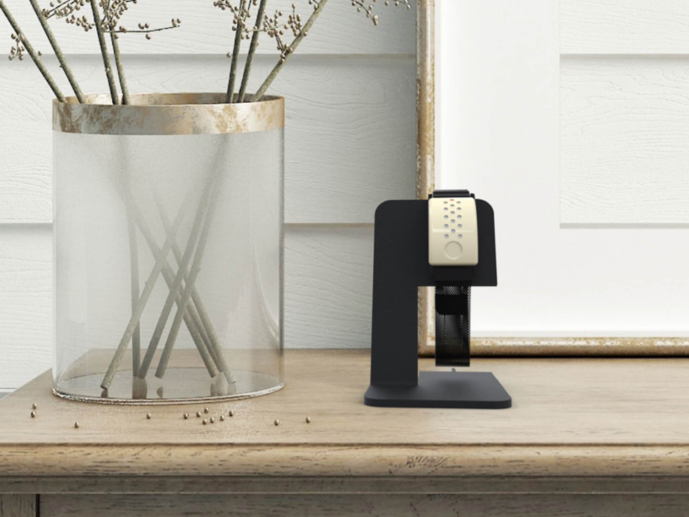
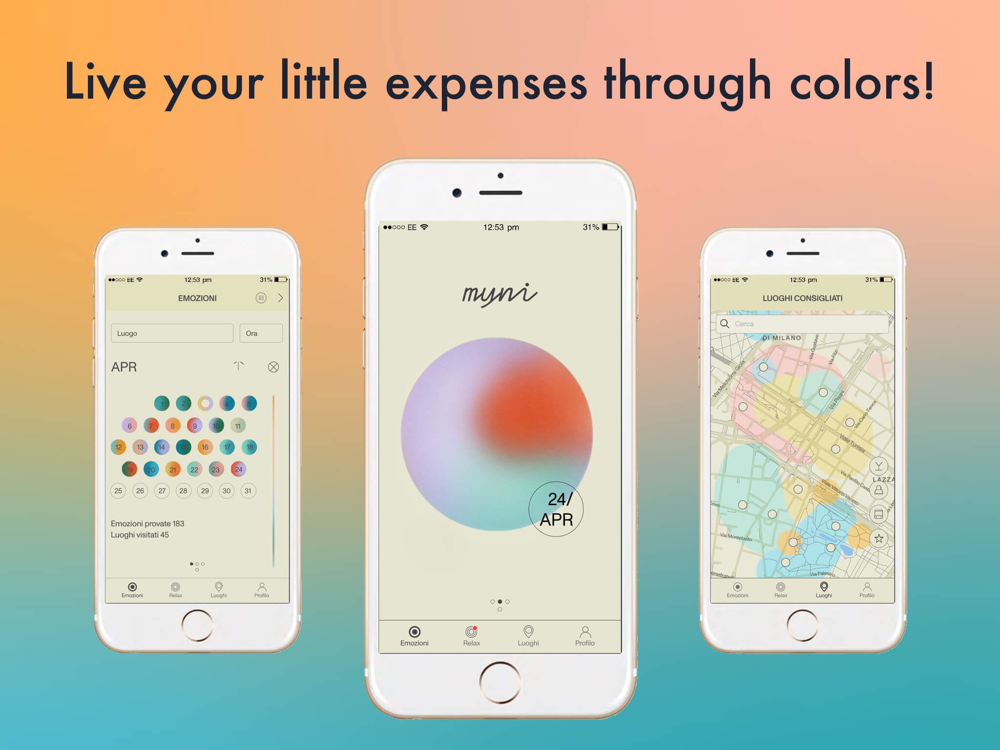

Myni
We focused on the relationship between the new generations (x and y) and small expenses. We did researches about users and their relationship with money. We use different tools: interviews, observations, questionnaires, customer journey maps, and personas. We understood that the trigger of the expenses is not the means but is the amount. In one month the small expenses became really big and no one remembers the experience linked to that purchase because it was not important.
So we decided to give value to the little purchases and link them to the user emotion using a smart bracelet. The system will know the feeling of the user thanks to different sensors and data gathering. Knowing the buying habits and the emotions, the system can suggest some adjustments to increase the quality and bring serenity to users’ lives. The system is composed of a social media campaign, a landing page, a smart bracelet, and an application. The bracelet allows users to have real-time feedback about the purchase.
It, also, allow them to be more conscious about the expenses.
At every moment the user can see the daily amount of purchases and the real-time emotion. The feedback is given by colored led.
User Actions Flow
Me and my teamates analyzed different type of user informations. In the schema below, we were able to translate user sources into different design opportunities. In this way we could continue in the framing of the service through maps, for example the system map, very userful to understand information, material and financial flow.
Style and Graphics
Mobile App
The mobile application is composed of different sections: emotions, places, profile and reax. The emotion part is divided in hystory and past actions, current state and present actions, budget and savings for future actions.

Smart bracelet prototype
Render and Final User Interface
 Project Credits
Politecnico di Milano - Course of Interaction Systems Studio
February 2019 - June 2019
Concept was ideated in collaboration with Autori, Catani, Corradini, Giuditta, Venturis.